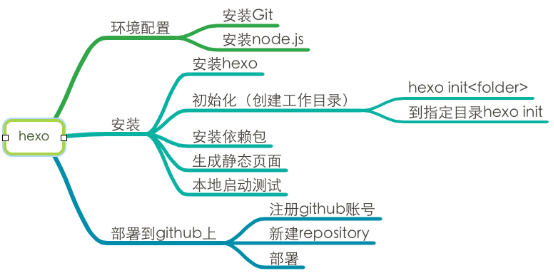
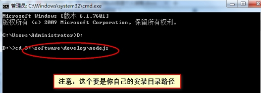
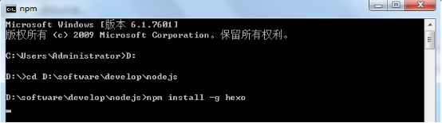
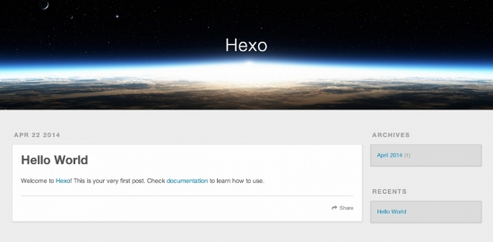

Hexo搭建博客No.I
Updated:
思维导图总览：

什么是Hexo：
hexo是Hexo是一个快速、简洁且高效的博客框架。Hexo 使用 Markdown（或其他渲染引擎）解析文章，在几秒内，即可利用靓丽的主题生成静态网页。
安装Hexo的前置条件：
Windows用户安装：
对于windows用户来说，建议使用安装程序进行安装。安装时，请勾选Add to PATH选项。另外，您也可以使用Git Bash，这是git for windows自带的一组程序，提供了Linux风格的shell，在该环境下，您可以直接用上面提到的命令来安装Node.js。打开它的方法很简单，在任意位置单击右键，选择“Git Bash Here”即可。由于Hexo的很多操作都涉及到命令行，您可以考虑始终使用Git Bash来进行操作。
安装 Hexo
第一步：打开cmd
第二步：进入NodeJS的安装目录

第三步：开始安装hexo，利用 npm 命令即可安装。
npm install -g hexo
来杯咖啡稍作等待，即可安装成功

第四步：开始搭建博客
新建一个文件夹，例如blog，此处blog便是你的博客目录，当然其他什么名字也是极好的，看心情了，此时最好将此目录备份到云盘或者其他地方，以防文件夹丢失后博客就没有了。
mkdir blog && cd blog进入blog文件夹，右键点击Git Bash Here，接下来执行初始化文件夹命令：
npm init安装依赖和插件
hexo install
新建完成后，指定文件夹的目录如下：
├── _config.yml
├── package.json
├── scaffolds
├── source
| ├── _drafts
| └── _posts
└── themes
第五步：生成静态页面
hexo g
至此，博客搭建成功！当然，仅仅是本地的
第六步：启动服务器进行本地预览
hexo s || hexo server || hexo server -p 5000
备注：执行3条命令中任何一条均可以，我的4000端口被占用，所以使用5000。
第七步：本地预览
打开浏览器访问 http://localhost:5000 访问初始化页面

基础配置
现在可以在 _config.yml中修改大部份的配置
参数 描述
title 网站标题
subtitle 网站副标题
description 网站描述
author 您的名字
language 网站使用的语言
timezone 网站时区。Hexo默认使用您电脑的时区,时区列表：America/New_York, Japan, UTC等
扩展
参数 描述
theme 当前主题名称,值为false时禁用主题
deploy 部署部分的设置